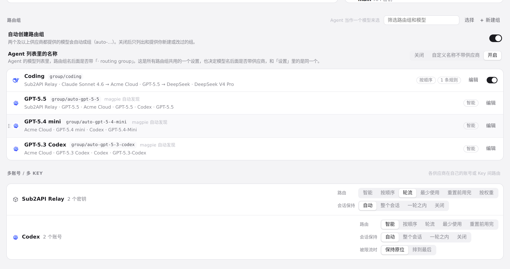
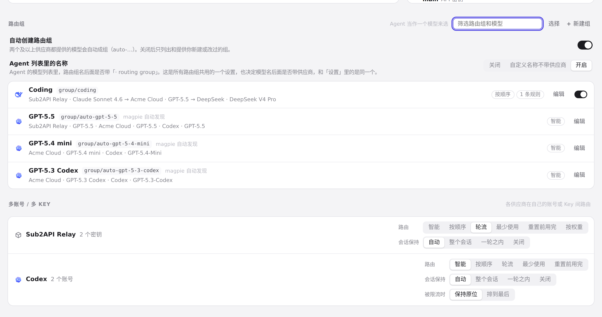
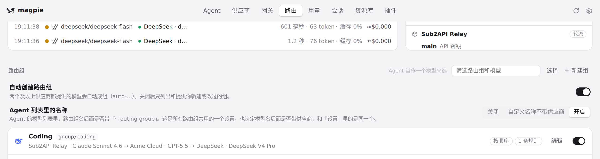
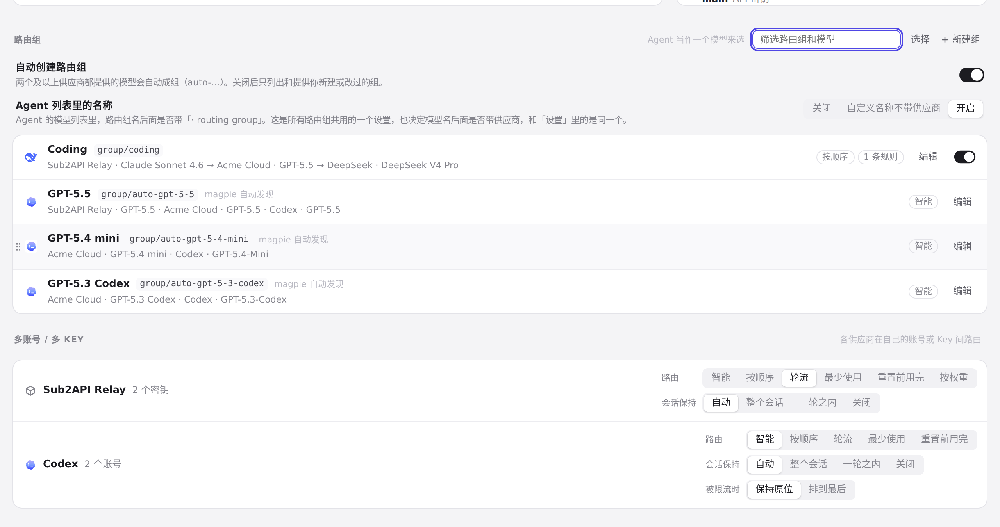

#1056 界面预览
commit dc6ad6c · 回到 PR · Routing 页「路由组」一节的表头不再每敲一个键就整行重建：只有在表头组成真的变化（如点击「选择」、删掉组、只剩一个组）时才重建，因此正在输入的筛选框在打字过程中始终是同一个节点、焦点与光标不再被手工搬回。
红线是鼠标走过的轨迹，红色圆环是一次点击；底部文字是这一步在做什么。空格暂停，← → 逐段查看。

路由组筛选框逐键输入 · 「路由组」一节：筛选框与旁边的「选择」「新建组」
路由组筛选框逐键输入 · 按一次键后筛选框里的内容与下面的列表
路由组筛选框逐键输入 · 再敲三个键后筛选框里的内容与下面的列表

路由组筛选框逐键输入 · 按 Esc 之后筛选框与列表

表头组成变化时仍然重建 · 表头：筛选框、「选择」、「新建组」
表头组成变化时仍然重建 · 筛选框里有内容时的表头
表头组成变化时仍然重建 · 筛选框有内容时的表头：筛选框与旁边的按钮

表头组成变化时仍然重建 · 清空筛选后的表头与路由组列表